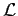
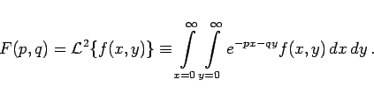

Integraltransformationen für Funktionen von mehreren Veränderlichen werden auch Mehrfach-Integraltransformationen genannt (s. Lit. 15.14). Am verbreitetsten sind die zweifache LAPLACE-Transformation, d.h. die LAPLACE-Transformation für eine Funktion von zwei Veränderlichen, die zweifache LAPLACE-CARSON-Transformation und die zweifache FOURIER-Transformation. Mit dem Symbol  für die LAPLACE-Transformation lautet die Definitionsgleichung
|  | (15.4) |